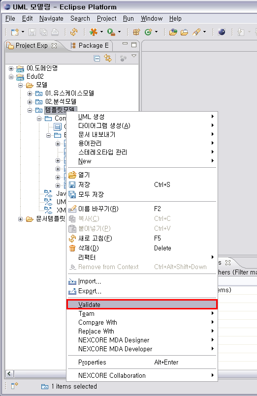

1. 모델 점검
작성한 UML 모델을 점검할 수 있습니다. 이 기능을 사용하면, 추후 발생할 수 있는 오류를 방지하고
안정적인 모델링 작업을 수행할 수 있습니다.
프로젝트 탐색기에서 프로젝트나 UML 모델이 들어있는 폴더 또는 모델을 선택하고 마우스 오른 클릭하여 [Validate]를 선택합니다.
프로젝트를 선택하고 [Validate] 액션을 실행하면 해당 프로젝트 내에 있는 모든 모델에 대해서 점검이 되며, 폴더를 선택하고
[Validate] 액션을 실행하면 폴더 내의 모든 모델에 대해서 점검이 됩니다. 모델을 선택할 때는 하나의 모델을 선택하고 점검할 수도 있고,
여러 모델을 선택하여 점검할 수도 있습니다.

<그림 1. Validate 액션 실행>
액션 실행에는 모델 용량이 클수록 시간이 많이 소요되지만 그리 오래 걸리지는 않습니다. 모델 점검이 완료되면 다음과 같은 다이얼로그가 표시됩니다. 이 다이얼로그에서는 점검 사항에 위배된 항목의 갯수, 점검한 리소스(모델)의 갯수, 점검에 걸린 시간을 확인할 수 있습니다. 다음 점검부터는 이 완료 다이얼로그를 보지 않으시려면 다이얼로그 하단에 있는 체크박스를 체크하시면 됩니다.

<그림 2. Validate 완료>
이렇게 점검된 결과는 [Problems] 뷰에서 확인할 수 있습니다. 화면 하단에 [Problems] 뷰가 없을 때에는 상단의 메뉴 바에서 [Window > Show View > Other]를 선택하여 나타난 다이얼로그에서 [Problems] 뷰를 찾아서 [OK] 버튼을 누르시면 됩니다.

<그림 3. [Problems] 뷰 찾기 - 1>

<그림 4. [Problems] 뷰 찾기 - 2>

<그림 5. Validate 결과 확인>
[Problems] 뷰에서 Warning으로 표시된 항목에는 해당 항목의 종류와 점검 위배 사항에 대한 설명, 파일명, 작업 공간에서의 경로, 모델 내의 경로가 표시됩니다. 여기에 표시된 요소들은 프로젝트 탐색기의 트리 구조에서도 Warning 표시가 됩니다. [Problems] 뷰에서 한 줄을 선택하고 마우스 오른 클릭하여 [Go to]를 선택하면 프로젝트 탐색기에서 해당 모델 요소가 포커싱됩니다. 이렇게 해당 모델 요소를 찾아서 점검 위배 사항을 수정할 수 있습니다.

<그림 6. 점검 위배 항목 찾기>
2. 모델 점검 항목
[Validate] 실행 시 점검되는 항목입니다. 점검 항목은 중요도에 따라 계속 추가될 예정입니다.
2.1 리소스 관련
리소스와 관련한 항목들은 주로 여러 모델 사이의 참조 관계와 관련이 있습니다. A 모델과 B 모델 사이에 참조 관계가 작성되어 있으나 B 모델이 삭제된 경우, A 모델을 편집하게 되면 모델 정보가 소실될 수 있습니다. 이런 경우를 방지하기 위하여 모델 점검 결과를 활용할 수 있습니다. 참조 관계에는 각 요소 간의 연관 관계(Association, Dependency, Interface Realization 등), Property의 유형, Operation에 작성된 파라미터의 유형, 다른 모델에 작성된 클래스나 인터페이스 등을 이용한 시퀀스 다이어그램 등에서 생성됩니다.
2.2 이름 관련
UML 요소의 이름과 관련하여 추후 문제가 생길 수 있는 요소들을 점검합니다. 이름과 관련한 항목들은, 작성한 UML 모델을 이용하여 소스 코드를 생성할 때 주로 영향을 끼칩니다. 중복된 경로에 같은 이름을 가진 요소가 존재하거나, 이름이 없는 요소가 존재하거나, 이름에 특수문자가 포함된 경우가 이에 해당합니다.
2.3 미작성 요소 관련
UML 모델의 작성이 완료되지 않았다고 판단되는 항목들을 찾아냅니다. UML 모델링 작업 완료 후에 이 점검 항목은 도움이 됩니다. 점검 항목들은 작성된 UML 모델로 소스 코드를 생성할 때, 필요한 정보가 작성되어 있지 않은 경우를 기준으로 합니다. 생성되어 있지만 사용되지 않은 클래스나 인터페이스 등의 요소, Operation이 할당되지 않은 시퀀스 다이어그램의 메시지, 유형이 지정되지 않은 Property, 유형이 지정되지 않은 Lifeline, 스테레오타입이 적용되지 않은 클래스 등을 점검합니다.